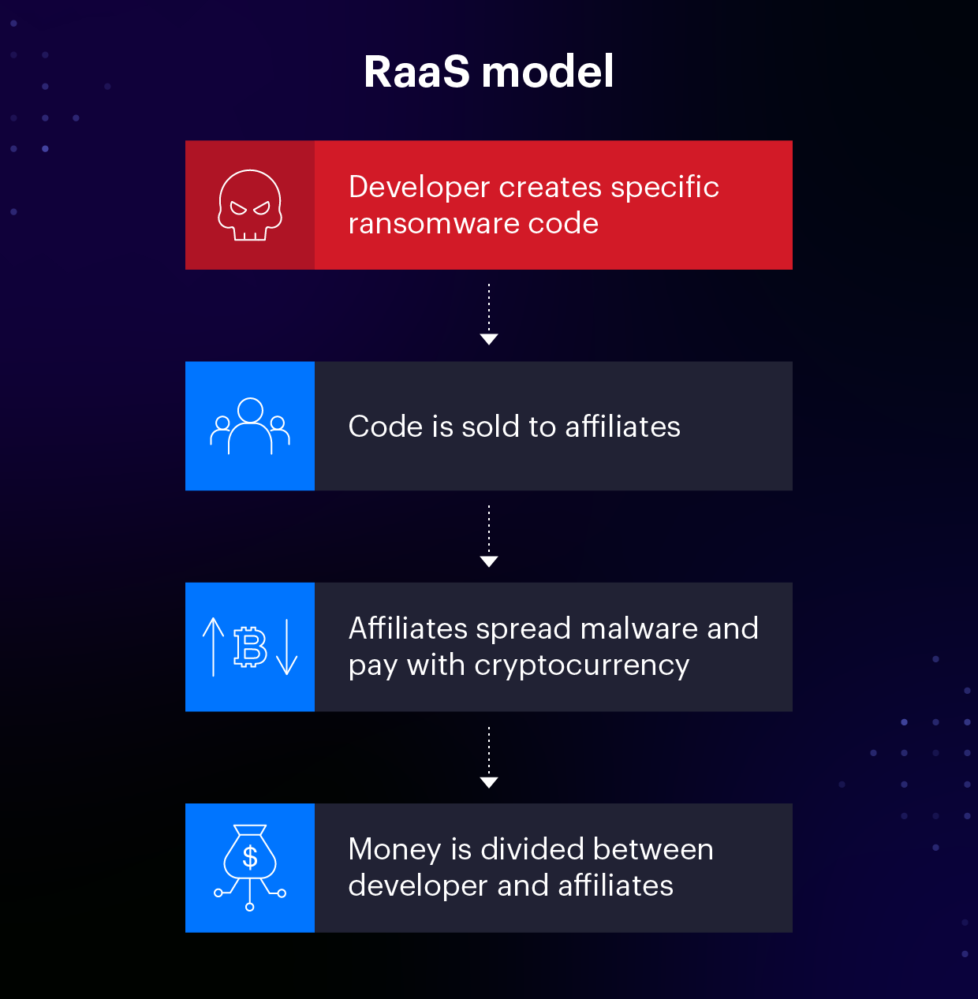
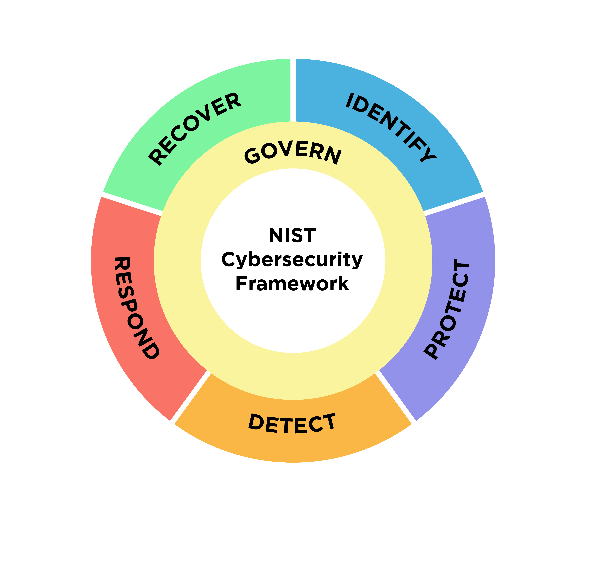

COMPSCI 255 // Cyber Policy
Policy Failures and a Path Forward
Pietro Ferraresi // 2026
In the early 2010s, ransomware looked pretty tame. It encrypted your personal files, demanded a few hundred dollars in Bitcoin, and you either paid or restored from a backup. The damage was real but contained. By 2024, that model is unrecognizable. Today's ransomware operations run like legitimate software companies. They have affiliate programs with revenue-share agreements, around-the-clock customer support for victims trying to negotiate, professional media relations teams, and internal dispute resolution processes. ALPHV/BlackCat, the group behind the Change Healthcare attack, even had an internal arbitration board to handle disputes between affiliates and the core operators.
The shift that made all of this profitable was the decision to stop going after individuals and start going after organizations that literally cannot afford to be offline. A hospital running at 105% capacity during flu season cannot negotiate for three weeks while IT rebuilds the network. A pipeline moving 2.5 million barrels a day of gasoline, diesel, and jet fuel from Houston to New Jersey cannot verify whether its operational technology has been touched without bringing the whole system down. A payment processor that sits between one in every three American patients and their insurance company cannot just pause billing for a month. These are the targets, and the attackers know exactly what an hour of downtime costs each of them.
The groups doing this are, for the most part, based in Russia or other former Soviet states. Many of the most sophisticated operators have an unwritten rule built directly into their malware: it will not execute on systems with Russian-language keyboard layouts or on computers located inside the Commonwealth of Independent States. This is not an accident. It is a calculated arrangement with their host governments: do not hit us, and we will not come after you. The result is that law enforcement in the U.S. can seize infrastructure and indict individuals, but they usually cannot actually arrest anyone, because the people they would arrest live in Moscow and St. Petersburg with no extradition treaty.

How ransomware-as-a-service works.
On the defensive side, the U.S. government has sixteen officially designated critical infrastructure sectors under Presidential Policy Directive 21 (2013), which was later updated and largely replaced by National Security Memorandum 22 (2024). These include energy, healthcare, water, transportation, financial services, and communications, among others. The premise is that if any of these went down simultaneously, the country would be in real trouble. The problem is that the rules protecting them are fragmented across dozens of agencies, largely voluntary, and poorly enforced where mandatory rules do exist. The same basic failure, missing multi-factor authentication on a remote access portal, took down Colonial Pipeline in 2021 and then Change Healthcare in 2024. Three years apart, same category of mistake, and in between those two attacks the federal government passed a major cyber reporting law (CIRCIA) that still is not operational as of early 2026.
This site examines three case studies in detail, explains how the U.S. policy framework currently works and where it breaks down, compares it to the United Kingdom's approach (centralized, mandatory, enforcement-backed), and ends with six specific recommendations grounded in what the case studies actually show.
Why does the U.S. keep getting hit by ransomware attacks on critical infrastructure, and what actually needs to change?
This sounds obvious but it turns out to be one of the hardest definitional questions in the whole framework, and it directly affects what has to be reported and when. Different agencies and documents define it differently, and that inconsistency is a real problem.
The current working definition in the CIRCIA proposed rule covers a "ransomware attack" as an incident that involves "the use or threatened use of unauthorized or malicious code" against an information system with the goal of "interrupting or disrupting the operations of such information system or compromising the confidentiality, availability, or integrity of electronic data stored on, processed by, or transiting such information system" in order to extort a demand for payment. That definition is broad on purpose. It covers classic encryption attacks but also pure data exfiltration extortion (where no encryption happens), denial-of-service extortion, and hybrid attacks.
But "ransomware attack" and "reportable incident" are not the same thing. Under the CIRCIA NPRM, only a "substantial cyber incident" triggers the 72-hour incident reporting requirement, and that is defined as an incident that produces a "substantial loss of confidentiality, integrity, or availability," a "serious impact on the safety and resiliency of operational systems and processes," disruption of the entity's ability to deliver goods or services, or unauthorized access caused by a supply chain compromise. A ransom payment, however, must be reported within 24 hours regardless of whether the underlying incident is "substantial". So if a hospital pays ransom on an attack that only encrypted a small portion of its network, the payment is reportable even if the attack itself is not.
Different sectors use different definitions altogether. HIPAA's Security Rule, which governs healthcare, does not use the word "ransomware" in its current operative text. Instead, HHS treats a ransomware incident as a "security incident" under the HIPAA Security Rule, which defines a security incident as "the attempted or successful unauthorized access, use, disclosure, modification, or destruction of information or interference with system operations in an information system." The effect: whether a healthcare ransomware attack counts as a reportable breach depends on whether the provider can prove that protected health information was not accessed or exfiltrated, which is almost impossible to prove with certainty. TSA's Pipeline Security Directives use yet another definition: a "cybersecurity incident" is any event that "jeopardizes the cybersecurity of an Information or Operational Technology system", with a 12-hour reporting deadline to CISA rather than 72.
Why this matters for policy: when every agency uses a slightly different definition, a company that operates across sectors (which is most large companies) has to figure out multiple overlapping reporting obligations with different timelines and thresholds. It also means the government does not have a consistent dataset across sectors, which makes trend analysis almost impossible.
PPD-21 (February 2013) originally identified the sixteen sectors and assigned each one a lead federal agency called a Sector Risk Management Agency (SRMA). That designation was updated and reaffirmed under National Security Memorandum 22 (April 2024), which modernized the framework but kept the same sixteen sectors. In practice, the security requirements across these sectors range from genuinely rigorous (financial services under Gramm-Leach-Bliley, nuclear under the Nuclear Regulatory Commission) to essentially nonexistent (water and wastewater systems, where over 150,000 public utilities exist with almost no federal cybersecurity requirements).
Hover over a sector to see its lead federal agency.
A hospital emergency room cannot stop operating for a week while IT rebuilds the network. A pipeline carrying 45% of East Coast fuel cannot shut down while engineers audit every system. A payment processor handling one in three U.S. patient records cannot pause while forensics run. Ransomware operators know these relationships precisely and price their demands to a fraction of what downtime actually costs. At Colonial, the $4.4 million ransom was a tiny number against the billions in lost economic activity the shutdown was about to cause. UnitedHealth's $22 million ransom on Change Healthcare worked out to roughly 0.7% of the $3.09 billion the breach would eventually cost them. Both companies made what they viewed as the rational business choice, and both payments funded the next wave of attacks.
A large portion of critical infrastructure runs on technology that predates the modern internet. Industrial control systems (ICS), SCADA (supervisory control and data acquisition) platforms, and medical devices were engineered for reliability and safety, not confidentiality or authentication. Many of them do not support encryption, cannot handle modern authentication protocols, and receive patches irregularly if at all. Over the last twenty years, these systems have been connected to corporate IT networks for monitoring and efficiency, which means an attacker who compromises an HR email account can sometimes pivot into the network segment that controls pumps and valves. This is the IT/OT convergence problem and it is what made Colonial's shutdown so severe: DarkSide never directly touched operational technology, but Colonial could not confirm OT was clean and could not run billing either, so they shut everything down as a precaution.
Most of the ransomware groups responsible for critical infrastructure attacks operate from Russia, Belarus, and a handful of other jurisdictions. Russia has no extradition treaty with the U.S. and has consistently declined to act against groups based on its territory as long as they avoid domestic targets. Many ransomware variants include code that checks the victim's keyboard language and geolocation and exits without executing if the target is inside the CIS. The RaaS model further fragments accountability. Developers, affiliates, initial access brokers, and cryptocurrency launderers are often in different countries, use different pseudonyms, and never meet. U.S. prosecutors have indicted and sanctioned dozens of ransomware operators, including multiple members of DarkSide and ALPHV/BlackCat, but indictments without extradition are symbolic.
Until CIRCIA is operational, there is no comprehensive national dataset on ransomware incidents. Victims have strong incentives to hide breaches: stock price impact, shareholder lawsuits, regulatory scrutiny, reputational damage, and loss of customer trust. Sector-specific reporting obligations exist in healthcare (HIPAA breach notification), finance (SEC 8-K cyber disclosure rules from 2023), and for federal contractors, but coverage is uneven and the data sits in different places. The Sophos "State of Ransomware 2024" survey found that 59% of organizations were hit by ransomware in the preceding year and 56% paid a ransom, but these are self-reported industry surveys, not government data. Without systematic visibility, Congress cannot write targeted legislation and CISA cannot identify which sectors and techniques need the most urgent intervention.
WannaCry, Colonial Pipeline, Change Healthcare. Three incidents, seven years, same failures.
Twenty years of policy milestones and the five gaps that undermine them.
NCSC, NIS Regulations, and what translates to the U.S.
Six specific proposals tied directly to what the case studies showed.
Each attack exploited a vulnerability that was known and fixable. Each one prompted policy responses that came too late for the next victim. Looking at them in sequence shows how the same categories of failure kept reappearing.
The self-replicating WannaCry ransomware attack was carried out by exploiting a vulnerability in Microsoft's Server Message Block protocol (SMBv1), which is commonly known as EternalBlue. This vulnerability was discovered by the NSA's Tailored Access Operations Unit, likely in 2013. Following their discovery of the vulnerability, the NSA classified it as an offensive capability and chose not to disclose the vulnerability to Microsoft in order to patch it but rather decided to retain it for future use in intelligence operations. This decision by the NSA lies at the heart of why WannaCry happened.
The Shadow Brokers hacking group first announced the existence of NSA hacking tools in a blog post in August 2016. They released the EternalBlue exploit publicly in April 2017. Microsoft had silently fixed the vulnerability in question in its March 14, 2017 security update MS17-010, likely upon notification from the NSA, now that it was certain that the vulnerability would be disclosed. However, patches do not instantly propagate themselves – millions of machines remained unpatched, many of which were running end-of-life Windows XP operating systems that would not receive the March patch, requiring an emergency out-of-band patch in April.
On May 12, 2017, WannaCry began spreading. The worm infected systems in over 150 countries within hours of becoming operational due to its technical design, which required no user interaction. Traditional ransomware spreads when a user interacts with something and clicks something, whereas WannaCry utilized the EternalBlue worm to move laterally and replicate across entire networks. All it took was one machine to become infected, and all others on the network were soon after compromised without users being involved in any way. The spread continued for seven hours until an incident occurred which stopped WannaCry in its tracks. Marcus Hutchins, a 22-year-old British cybersecurity researcher, noticed that the malware would check for the existence of a specific domain prior to execution. For $10, Hutchins registered the domain, which became a kill-switch that stopped infections dead in their tracks.
Perhaps the greatest organizational effect was experienced by the United Kingdom's National Health Service. According to the National Audit Office's report of WannaCry (October 2017), at least 80 out of 236 NHS trust providers in England were affected, as well as 603 primary care and other NHS organizations, including 595 GP surgeries. Some 19,000 appointments, including urgent cancer referrals, were canceled as a result. Five emergency departments had to reroute ambulances to other hospitals since they were unable to take any additional patients. The tone used in the NAO report was clear and unambiguous, with the statement that "the NHS had been warned of the risk of a cyber-attack on the NHS a year before WannaCry and although it had work ongoing, it did not formally respond to the warning until July 2017." The Department of Health and NHS England did not ensure that NHS organizations patched their systems and responded to CareCERT alerts. This attack could have been completely prevented, and its occurrence in such a situation was what made it so damning for the voluntary guidance method.
While the U.S. effect was more limited, there were still major disruptions in some parts of the country. In Pennsylvania, the Heritage Valley Health System noted major problems with their radiology, laboratory, and pharmacy computer networks. Even worse off was the FedEx-owned TNT Express subsidiary. However, the larger effect was the reason why the malware attacked the United States. Essentially, the attack came from something created by the NSA, which decided to keep the tool for itself. Now that it had leaked out and became a global threat, the government had to deal with the aftermath of something it helped create. The former Homeland Security Advisor Tom Bossert officially attributed the attack to the Lazarus Group within North Korea in December of 2017. Of course, attribution is not a deterrent in cases where extradition cannot be achieved.
The three things that would still exist seven years later in the Change Healthcare case. Firstly, the Vulnerabilities Equities Process, which should provide guidance on whether the vulnerability will be disclosed by the U.S. government or used for offensive purposes, was running without any statute, without oversight, and without transparency. The official charter on the topic was published only in November 2017 – more than half a year after the incident. Moreover, it is only an internal executive branch policy document but not a legal act, which means it may easily be changed or overlooked.
Secondly, there were no effective practices in terms of managing the vulnerabilities of critical infrastructure systems. If the NHS applied the patch, which existed since two months before the attack, the losses would decrease drastically. However, there was no system in place to force trust in hospitals to install patches, no audit of compliance with Cyber Essentials standards, and no effective enforcement measure. In Change Healthcare seven years later, there was HIPAA, which did not have specific requirements regarding such security measures as MFA or timely software updates.
Thirdly, there was no coordination mechanism to address cross-border cyber attacks. The worm affected 150 countries within several hours. The United States officially attributed the attack to North Korea seven months later. At this moment, however, the discussion on the issue was already over and any potential deterrent response failed.
The Colonial Pipeline runs from Texas Gulf Coast to the New York Metropolitan area, carrying refined petroleum products (gasoline, jet fuel, diesel fuel, heating fuel) from various refineries. This pipeline has an annual throughput capacity of about 2.5 million barrels per day and serves the East Coast of the US with 45% of its refined fuel needs. On May 6, 2021, the ransomware group named DarkSide (a Russian-language affiliate program) gained access to Colonial Pipeline's information systems via one vulnerable employee's VPN account that had been abandoned previously, did not feature multi-factor authentication, and used credentials that had already been exposed in the past data breach.
DarkSide remained active inside Colonial Pipeline's networks for about one day during which the group exfiltrated 100GB of data, then used their access privileges to deploy ransomware that locked Colonial's billing, accounting, and client management systems. Significantly, OT (operational technology that controls pipeline's flow) remained untouched by DarkSide's activities, but Colonial Pipeline could not ascertain that OT was uncompromised and even assuming it had stayed unbreached, still required its billing system to run because it needed to identify to whom each batch of fuel belonged. Hence, Colonial decided to shut down operations of the pipeline entirely.
Colonial Pipeline paid $4.4 million of the requested ransom in Bitcoins very soon after being targeted. In fact, the decryption tool provided by DarkSide was extremely inefficient, thus Colonial Pipeline had to restore systems from its backups. By May 12, Colonial Pipeline resumed its activities, though at a reduced capacity until returning to normal operations within a few days. On June 7, 2021, the FBI confirmed recovery of 63.7 Bitcoins worth about $2.3 million from one of the wallets associated with DarkSide. In fact, DarkSide ceased operations on May 14 under pressure from law enforcement and rebranded into BlackMatter within a couple of months, while some of them were eventually detected again operating as ALPHV/BlackCat (targeting Change Healthcare).
Fuel shortage problems were prevalent in the southeast. Panic buying led to long queues at service stations from Virginia to Florida. Emergencies were declared in Virginia, North Carolina, Georgia, and Florida. Fuel prices in the U.S. temporarily shot up past $3 per gallon, the first time since 2014. The airlines flying out of Charlotte Douglas and Hartsfield-Jackson Atlanta airports were forced to find new routes to refuel or bring additional fuel to their planes from the point of departure. In addition, the outage showed how vulnerable the downstream logistics system was; there weren’t enough tanker trucks available to make up for the loss.
The Colonial incident marked the point at which ransomware entered the realm of National Security Council priorities. As a consequence of the ransomware attack, President Biden signed executive order 14028 "Improving the Nation's Cybersecurity" (May 12, 2021), which included the following: a zero-trust architecture requirement for all federal government agencies; software supply chain security requirements, including the mandate for Software Bill of Materials to be supplied for all contracts with federal agencies; and creation of the Cyber Safety Review Board. In addition, two weeks after the shutdown, TSA issued its first-ever directive for the pipeline industry – Security Directive Pipeline-2021-01 – on May 28. Previously, the industry guidance had existed only in the form of voluntary TSA Pipeline Security Guidelines (2018).
Security Directive Pipeline-2021-01 outlined three actions that needed to be taken by designated critical pipeline operators: appointment of a Cybersecurity Coordinator who is reachable around the clock; reporting of any cybersecurity incidents to TSA and CISA within 12 hours; and completion of the pipeline operator vulnerability assessment, along with identification of vulnerabilities and the development of an action plan within 30 days. Two months after Security Directive Pipeline-2021-01, TSA issued its next Security Directive Pipeline-2021-02 on July 19, 2021, in which operators were asked to take the following steps: mitigate risks in relation to disruption caused by ransomware or similar cyberattacks; create a cybersecurity contingency and recovery plan; and review the cybersecurity architecture design. After going through five drafts (-02A through -02E), the directive changed from prescriptive to performance-based. Nevertheless, this marked progress, although not possible without Colonial's shutdown.
Prior to 2021, TSA had not issued a single cybersecurity-related rule for the pipeline industry since its creation in 2001. Also, TSA had not conducted any cybersecurity-related audit of Colonial during the three years leading up to the cyberattack. One unsecured user account should not have caused almost 45% of the East Coast's fuel supplies to be shut down, yet it did.
This brings up the more fundamental issue of IT/OT convergence. The OT systems at Colonial were untouched during the attack. The attack took place on the billing network. However, due to the dependency between the two networks on the level of business processes, an attack on one of them meant an attack on both of them. This is the reality that exists in most infrastructures: An attack does not need to directly impact physical control systems in order to have physical consequences, as long as upstream business systems can be targeted.
Change Healthcare is a subsidiary company under the Optum umbrella of UnitedHealth Group. It handles over 15 billion health care transactions per year, which include claims management, eligibility verification, prior authorizations, and prescription writing. As per estimates by the parent company, one in every three patient records in the United States passes through their systems at some point. UHG bought Change Healthcare for $13 billion in 2022.
An affiliate of the ALPHV/BlackCat ransomware gang gained access to a Change Healthcare Citrix remote access portal in February 2024. In an appearance before the Senate Finance Committee, on May 1, 2024, the CEO of UnitedHealth Group, Mr. Andrew Witty, stated that the portal lacked MFA. This was confirmed in his written statement and testified again during his appearance at the House Energy and Commerce Committee. Three years after the incident involving Colonial Pipeline, in one of the largest healthcare organizations in the United States, a similar failure led to a massive breach.
The hackers spent approximately nine days on the network between February 12 and February 21. They exfiltrated massive amounts of data during this period. They then launched ransomware against the company's core processing systems. Change Healthcare then disconnected all its services, which led to massive downstream effects. Patients could not verify their insurance coverage, submit claims online, or receive their medications unless they paid upfront in cash. Hospitals, dental practices, and physician groups could not file their claims and began to run out of operating capital in less than a month.
On March 3, 2024, UnitedHealth Group paid $22 million in Bitcoin to ALPHV. Here the narrative begins to get bizarre. ALPHV's management stole the money and went into hiding. To cover their tracks, they posted a fake FBI takedown notice on their website. They failed to pay the affiliate their portion of the ransom. Furious, the affiliate posted their claim, stating that while they had indeed paid the ransom, they had yet to receive their portion. They subsequently handed over the data stolen from Change Healthcare to another ransomware group called RansomHub, which then issued a ransom demand to publish the information unless they were paid a second time.
The short-term impact on healthcare delivery was quite serious. In response to the incident, the American Hospital Association surveyed their members and discovered that 94% had experienced financial consequences, 74% reported disruptions to direct patient care, and more than half were experiencing payroll difficulties. Small healthcare providers, rural hospitals, and community health centers bore the brunt of the damage since they lacked the funds to survive without revenue for weeks. Consequently, HHS established an advance payment program for affected healthcare organizations.
The breach itself is the largest in U.S. healthcare history. According to UHG's disclosure to the HHS Office for Civil Rights in October 2024, some 100 million individuals were affected. This number was subsequently raised. As per January 2025 filings, UHG estimated that roughly 190 million Americans had been affected, almost half the country's population. The leaked information included names, addresses, dates of birth, Social Security numbers, insurance information, diagnoses, test results, treatment records, and billing information.
UnitedHealth Group's direct costs resulting from the breach through fiscal year-end 2024 amounted to $3.09 billion. The estimate was taken from UnitedHealth Group's own Q1-Q4 2024 quarterly earnings reports. These costs cover information technology restoration efforts, business disruption expenses, and notification of customers. They do not account for litigation costs, including multiple class-action suits filed by patients, healthcare providers, and business partners.
The first thing that became clear about the Change Healthcare attack is the issue of concentration risk within the U.S. healthcare payment systems. No single firm should have the ability to bring down one-third of the country's healthcare billing due to its failure to properly protect a remote access portal with multi-factor authentication. However, due to decades of industry consolidation, Change Healthcare now finds itself at a critical junction – one which has an impact on nearly all Americans' experiences with the healthcare system in one way or another. Yet unlike in other industries where there are designations such as the SIFI framework, there is currently no such thing as a "systemically important" healthcare firm.
Second, the problem is that the HIPAA Security Rule itself is outdated. The most recent version of the rule's operative language was amended back in 2013. In that document, there is no requirement for multi-factor authentication, no requirement for any kind of encryption standard to be applied, no requirement for an inventory of assets, and no requirement for any sort of network segmentation. The only requirement regarding authentication is for covered entities to simply "implement procedures to verify that a person or entity seeking access to electronic protected health information is the one claimed."
This is changing, but very slowly. On December 27, 2024 (federalregister.gov/entry/2025-00031), HHS's Office for Civil Rights issued its Notice of Proposed Rulemaking, which would dramatically modernize the HIPAA Security Rule for the first time since over two decades ago. This proposal explicitly mandates MFA, explicitly mandates encryption of all PHI stored or transmitted electronically, explicitly mandates asset inventories and network diagrams, and completely removes the "addressable" option from all standards. Everything else in the HIPAA Security Rule becomes mandatory under the proposed changes. However, the rule is still just in the notice-and-comment phase in early 2026, meaning that after finalization, it could take up to 180 days to 12 months to become fully operational. Change Healthcare happened because there was no rule in place. And there could be another Change Healthcare by the time the rule gets passed and goes into effect.
Finally, RaaS business models have inherent vulnerabilities that law enforcement has not yet exploited successfully but could in the future. The notorious ALPHV gang conducted an exit scam on itself by keeping the ransom proceeds while stiffing their affiliates of the same, which is quite telling about the fragility of such schemes. As a reminder, the term affiliate refers to contractors who cooperate simultaneously with more than one RaaS operator. In order to do so, they have to trust the operator. Law enforcement agencies are capable of impersonating RaaS operators, conducting influence campaigns against affiliates to undermine operators' reputation, thus making affiliation less appealing for affiliates. The FBI's January 2023 successful operation to disrupt Hive RaaS through secretly working inside its infrastructure and issuing decryptors to victims is the template. However, this is an isolated incident.
| WannaCry (2017) | Colonial Pipeline (2021) | Change Healthcare (2024) | |
|---|---|---|---|
| Entry point | EternalBlue SMB exploit (NSA-leaked) | Unused VPN credential, no MFA | Citrix portal, no MFA |
| Attacker | Lazarus Group (DPRK) | DarkSide (RaaS, Russia) | ALPHV/BlackCat affiliate |
| Root cause | Unpatched systems + VEP hoarding | No MFA + IT/OT convergence | No MFA + concentration risk |
| Ransom | ~$140k total (low payment rate) | $4.4M ($2.3M recovered by FBI) | $22M (no recovery; possible 2nd payment) |
| Scale | 19k NHS appointments cancelled; 230k machines globally | 45% East Coast fuel, 6-day shutdown | 190M+ records exposed; $3.09B cost |
| Policy response | VEP Charter published Nov 2017 (not law) | EO 14028 + TSA SDs within weeks | HIPAA Security Rule NPRM Dec 2024 |
| Core lesson | Hoarding vulnerabilities has real costs | Voluntary standards fail at scale | Concentration risk is unregulated |
Failures are diverse, but the process remains constant. There is a clear and avoidable weakness. There is no mandatory measure for its correction. The attack generates an outcome that is hugely disproportionate to the technical challenge of penetrating the network. Policy-making occurs belatedly, always reacting rather than anticipating, and never considering the implications beyond the immediately affected industry.
Two decades of cybersecurity policy developed case-by-case with crucial vulnerabilities being repeatedly exposed by ransomware attackers. Most policies and guidelines are voluntary. The most relevant legislation currently in existence is yet to be fully implemented.
Homeland Security Presidential Directive 7 was the first step made towards defining the critical infrastructures and determining federal responsibility regarding them. This strategy was very clear in terms of public private partnership and lacked any mandatory requirements or any means for enforcing them. It marked the way for the following twenty years.
PPD-21 re-designated the 16 CI Sectors and gave each an SRMA. EO 13636 then instructed NIST to develop a framework that became known as the Cybersecurity Framework. This is now used across the globe by businesses and governments alike. What's more, this remains completely voluntary for all but one of the 16 CI Sectors.
. Legal immunities were granted (liability immunities, antitrust immunities, FOIA immunities) to firms participating in voluntary programs that provide threat intelligence to the government. It was a great move, although few firms participated because of other liability issues as well as potential damage to their reputation.
With the enactment of the Cybersecurity and Infrastructure Security Agency Act of 2018, the National Protection and Programs Directorate under the Department of Homeland Security (DHS) evolved to become an independent agency known as the CISA. The organization acts as the primary coordination body for federal civilian cybersecurity in the United States. However, the powers of CISA are advisory in nature regarding private organizations.
Issued immediately following SolarWinds and Colonial Pipeline attacks. Executive Order 14028 “Improving the Nation’s Cybersecurity” (May 12, 2021) called for the implementation of a zero trust model and EDR for federal agencies; implemented software supply chain security measures including SBOMs for federal contractors; imposed incident reporting for federal contractors; and established the Cyber Safety Review Board. Extensive coverage within federal government and its contractors. Minimal impact on private CI outside federal government scope.
The Cyber Incident Reporting for Critical Infrastructure Act of 2022, signed March 15, 2022 as part of the Consolidated Appropriations Act (Pub. L. 117-103). First federal law addressing cross-sector reporting in cyberspace. Mandates CISA to promulgate rules regarding 72-hour reporting for substantial cyber incidents and 24-hour reporting for ransom payments. Congress allowed CISA to define "covered entity" and "substantial cyber incident."
White House, National Cybersecurity Strategy (March 2023). This is the first strategy paper that recognizes “shifting the burden” to software companies and service providers from end users. It also recommended mandatory cybersecurity requirements for critical infrastructure. This strategy paper set the direction for the HIPAA Security Rule NPRM and other sectoral regulations.
Three key regulatory moves. National Security Memorandum 22, issued on April 30, 2024, enhanced the framework for critical infrastructure, effectively revising PPD-21. The proposed CIRCIA Rule by CISA covered about 316,000 entities for mandatory reporting requirements. Finally, on December 27, 2024, HHS/OCR released an NPRM for the HIPAA Security Rule, which is the first big revision in over two decades and which requires multifactor authentication, encryption, asset management, and network segmentation at all HIPAA entities.
The final CIRCIA rule was intended to be released by CISA by October 2025. The comments were received in such huge numbers, even exceeding 2,000, that there was a need for the agency to extend the deadline to May 2026. Virtual town hall meetings were announced in February 2026, but a lapse in funding of DHS prevented these meetings from taking place. Even in April 2026, the release of the final CIRCIA rule remains pending.
Because CIRCIA is the single most important piece of ransomware-relevant federal legislation in the last decade, it is worth walking through what it actually says versus what it will require once operational.
Section 681b of CIRCIA provides for. It imposes two separate notification requirements. Firstly, a “covered entity” that suffers a “covered cyber incident” shall notify CISA not later than 72 hours after determining, to a reasonable degree of certainty, that the incident has occurred. Secondly, a covered entity that pays ransom money, or that instructs another entity to pay ransom money on its behalf, due to ransomware, shall notify CISA not later than 24 hours after making such payments. These two requirements are separate from each other. In addition, a ransom payment is required to be notified even when the underlying incident does not amount to a “covered cyber incident.”
"A covered entity" under the law means an entity within one of the 16 critical infrastructure sectors defined as such under CISA rules. The making of those rules is the essence of the battle. CISA's April 2024 NPRM sets forth a dual test whereby a covered entity is any entity in one of the critical infrastructure sectors, which either (1) surpasses SBA size thresholds based on its NAICS industry code classification, or (2) irrespective of size, qualifies under various criteria specific to each individual sector (chemical facilities with over a certain threshold amount of material present, defense industrial base companies, entities that own or operate bulk-power electric systems, and more). CISA estimates that about 316,000 entities will be covered under the new rulemaking.
The NPRM defines a substantial cyber incident as an event that results in either of the following: substantial loss of confidentiality, integrity, or availability of information systems or data, significant effects on the safety or resiliency of operational systems or processes, interference with the delivery of goods and services by the entity, or any unauthorized access due to a compromise of the supply chain (compromised vendor, MSP, or cloud provider with access to the entity’s systems). CISA has included some examples of such incidents, including the following: ransomware attacks that encrypt core business systems, DDoS attacks that disrupt services for a prolonged time, compromised credentials through an MSP, and a security exploit that causes prolonged downtime.
The report must contain identifying details regarding the organization; a description of the occurrence/incident, including the consequences that arose; the Tactics, Techniques, and Procedures (TTPs) employed by the threat actor; Indicators of Compromise (IOCs); the identity of the threat actor where it is known; and where the report concerns a ransom payment, details of the payment made such as how much was paid and the cryptocurrency addresses used to make payment.
This is where CIRCIA begins to have teeth. If CISA becomes aware of a covered incident from a press release, referral from law enforcement, or another method, but the organization has failed to submit a report, a Request for Information may be issued that must be responded to within 72 hours. Should there be no response, or an insufficient response, a subpoena may be issued. Noncompliance with a subpoena will be referred to DOJ for civil action, to the DHS Suspension & Debarment office regarding federal contracting issues, and false/fraudulent information provided on a CIRCIA report renders the individual criminally liable ((five years maximum, eight years if related to terrorism)).
The legislation has provisions for protection to ensure honest reporting by the entities. It states that reports will not be admissible as evidence in civil and criminal suits against the reporting entity, is not subject to FOIA, and enjoys liability protections for reporting. Further, the reports are to be treated as confidential and proprietary to the entity and should be considered commercial and financial information. This ensures that companies do not report their own mistakes and shortcomings to government agencies.
The CIRCIA law was signed in March 2022 due to Colonial Pipeline, SolarWinds, and the need for federal visibility into cyber events. The law allocated 24 months for the NPRM to be published by CISA, followed by 18 months from the publication of the NPRM until the rule is issued. CISA complied with the NPRM deadline in April 2024 but moved the deadline for issuance of the final rule from October 2025 to May 2026. Even this timeline faced the possibility of being breached due to the lapse in the budget of DHS, which made the February 2026 town halls impossible to conduct. Each month’s delay in the process means another month of blindness regarding ransomware reports. The Change Healthcare attack occurred two years after the start of the CIRCIA schedule.
The NIST Cybersecurity Framework is a well-designed document. In fact, it is a framework by design. Thus, it outlines cybersecurity goals across its six functions (Govern, Identify, Protect, Detect, Respond, Recover) and then adds categories and subcategories below them. It does not tell anyone what to do.
Whether or not a particular CI sector is mandated to use the CSF framework will depend entirely on whether its sectoral regulator has binding powers in the first place and chooses to exercise them. The financial services sector follows Gramm-Leach-Bliley together with Interagency Guidelines Establishing Information Security Standards (12 CFR Part 30, Appendix B; for national banks and similar provisions for other kinds of regulated organizations); FFIEC Cybersecurity Assessment Tool; and Part 500 from NYDFS. The nuclear power plants are subject to NRC's cybersecurity requirements that mandate certain protections be taken concerning the critical digital assets. They have clear cybersecurity obligations with enforcement.
The healthcare sector is subject to HIPAA Security Rule. This rule dates back to 2003 and has had a substantive update as recently as in 2013. It requires neither multi-factor authentication nor encryption standards or any such specifics. The single-sentence section regarding authentication is all there is in the HIPAA Security Rule. Furthermore, its enforcement by HHS is a backward look that assesses whether a breached organization had "reasonable and appropriate" protection; many of those fined for breaches usually agree to pay relatively minor amounts to resolve disputes. The Change Healthcare breach happened in an environment where the HIPAA Security Rule technically required "authentication procedures," but nothing that could prevent this kind of attack.
Water/wastewater services are even more of a problem. There are about 150,000 water utility companies in the United States; the vast majority of those are small municipalities. The EPA tried to force its hand using the Safe Drinking Water Act, by requiring water utilities to conduct cybersecurity assessments in their risk assessments. However, in Attorneys General of Missouri et al. v. EPA (8th Cir., 2023), the Eight Circuit ruled in favor of the Attorneys General, finding that the statute did not give the EPA the authority to do that. As of early 2026, there is no cybersecurity requirement in water utilities.
The 16 CI sectors are overseen by 16 separate SRMAs, although certain agencies regulate more than one sector, especially CISA, which regulates eight sectors. These organizations vary greatly in their powers, resources, culture, and historical performance. Some, such as the Nuclear Regulatory Commission and financial regulators, are safety-and-soundness professionals with long histories of enforcement of complicated technical standards. Others, like EPA with respect to water, possess very little cybersecurity know-how and legal authority.
This means that security in the field of CI will always rely on whatever sector is the least secure, since hackers will target whatever is easiest. The attack on Colonial Pipeline did not take place because the pipeline industry was inherently more insecure than any other; rather, it took place because the pipeline industry was not regulated with respect to cyber protection before May 28, 2021, when banks and nuclear facilities had long since been regulated. The Change Healthcare breach did not occur because Citrix portals pose an extraordinary risk; rather, it occurred because HIPAA regulations did not mandate MFA.
CIRCIA became law in March 2022 as a result of the Colonial Pipeline and SolarWinds incidents demonstrating that there was no complete visibility for the government on cyber attacks at the critical infrastructure level. The deadlines set out under the legislation (24 months from introduction to NPRM, 18 months from NPRM to final rule) were reflective of this urgency. However, when the NPRM finally arrived in April 2024, it was highly controversial. It was claimed by industry organizations that the dual test of coverage was overly broad, that the 72-hour deadline to report was impractical due to ongoing incident response activities, that the record retention provisions were too strict, and that the ransomware payment reporting requirement incentivized non-cooperation.
The criticism is valid in part. A deadline of 72 hours while trying to mitigate the breach and figure out its scope is very challenging indeed. The other criticism is motivated by vested interests because reporting will expose many embarrassing facts about cybersecurity operations, and it would be much more convenient for covered entities not to report. In any case, the reason why CISA decided to move the finalization of the rule until May 2026 lies in the sheer number of significant issues with it, and even further delays seem likely in light of the town hall disruptions in February 2026. However, the pattern of 'one incident – one sector response' remains, as evident from the examples of the case studies.
American law enforcement agencies and their intelligence services are not lacking in the technical capabilities to interfere with ransomware activities. The FBI's anti-Hive ("Dagon") operation was conducted between July 2022 and January 2023. In the seven-month duration of that operation, FBI officers remained within Hive's IT infrastructure collecting encryption keys in stealth mode and handing them out to their owners who were not ready to pay, helping more than 300 people to save $130 million. Finally, the FBI took down Hive's servers on January 26, 2023, together with its German and Dutch counterparts.
Disruption of ALPHV/BlackCat in December 2023 followed the same pattern. Through cooperation between the FBI and its foreign partners, ALPHV's leak site on the dark web was taken down, and the group's decryption tool was released. Weeks later, ALPHV had restored its infrastructure using other servers and got back to work. Within two months, an ALPHV affiliate was responsible for an attack on Change Healthcare. The problem is not that disruption cannot succeed; disruption obviously succeeds temporarily. Disruption will change nothing if it's limited to temporary operations. Disruption has to be sustained because these groups have no capital structure that can be destroyed and their infrastructure rebuilt within days with a new list of affiliates.
The Joint Ransomware Task Force, established under CIRCIA § 681d, is supposed to be the coordinating body for this work. The task force is jointly led by CISA and FBI, and has had notable successes in terms of operations. However, it is not sufficiently funded to do all of the work needed, since it merely coordinates what agencies are doing.
It should also be noted that CISA enjoys a highly regarded technical toolkit: it publishes a list of Known Exploited Vulnerabilities (KEVs); it runs Protective DNS to prevent malicious DNS queries by federal government agencies and a rising number of state, local, tribal, and territorial (SLTT) government entities as well as their private sector partners; it releases joint security alerts and advisories; it organizes and conducts incident response actions. Binding Operational Directives have been used against civilian executive branch federal agencies as part of CISA's authority in a rather aggressive way, such as BOD 22-01 requiring timely remediation of vulnerabilities from the KEV list (issued in November 2021), BOD 23-01 obliging federal agencies to have complete visibility and vulnerability detection, etc.
However, that power ends with the federal networks. CISA cannot instruct a hospital to mitigate vulnerabilities on its KEV list. CISA cannot instruct a water utility to implement multi-factor authentication. CISA cannot require a pipeline company to install an endpoint detection and response system. CISA can advise, coordinate, collaborate, and provide free technical support. Whether or not the private actor implements those recommendations is solely up to them. That is the critical structural problem. The federal organization with the greatest technical expertise and situational awareness of the threat lacks any power to ensure compliance. After the Colonial attack, TSA received new powers over pipelines. Following the Change Healthcare hack, HHS is working on updating HIPAA. Yet CISA, the interagency coordination organization, remains voluntary.
The second edition of the Cybersecurity Framework from NIST was released in February 2024. This version of the framework introduced changes in the core structure by adding a sixth function called Govern. The new function sits in the middle of the other five, which include Identify, Protect, Detect, Respond, and Recover. The introduction of Govern is seen as the biggest development since the first release of the framework ten years ago. The new version emphasizes that cybersecurity should be treated as an organizational challenge and not purely as a technical issue.

NIST Cybersecurity Framework 2.0 core functions. Source: NIST.gov
The CSF is a well-designed, applicable tool. Companies that use the CSF seriously are safer than companies that ignore the CSF. The issue is the term "voluntary." Without regulation from the sector that obligates the company to apply the CSF or even check its performance, the healthcare company may just put up a facade by applying the CSF while its systems remain unpatched, multifactor authentication remains switched off in its remote access, and it does not test its backup. The CSF is about what excellence should look like. It is not about bringing out excellence. Unless there is legislation from the sector level that demands certain achievements, the CSF is a guide for companies that desire security.
A centralized agency, mandatory standards for essential services with real enforcement, and active defence at national scale. It does not solve every problem, and parts of it do not transplant to the U.S. directly. But several pieces of the UK approach directly address the exact gaps the American case studies keep exposing.
The UK established the National Cyber Security Centre in October 2016 as the public-facing operational arm of GCHQ (Government Communications Headquarters), the UK's signals intelligence agency. The placement is deliberate. In the UK model, the agency that runs offensive signals intelligence also runs defensive cybersecurity for the nation. The two functions sit under the same operational chain of command, share analysts, share infrastructure, and share real-time threat intelligence without classification delays or inter-agency coordination friction.
This would be controversial in the U.S. because of the long-standing separation between signals intelligence (NSA) and civilian cybersecurity (CISA), and for legitimate civil liberties reasons: NSA is legally barred from most domestic collection and Americans are rightly wary of intelligence agencies having direct visibility into private networks. The U.S. model, with CISA housed in DHS as a civilian agency and NSA housed in DOD, reflects those concerns. But it also produces a specific operational cost. When a novel vulnerability is being exploited against American infrastructure, the pipeline from "NSA detects it in foreign collection" to "CISA operationalizes it for defense" crosses classification boundaries, inter-agency coordination processes, and political sensitivities. The UK NCSC has none of these gaps in its workflow.
Beyond its intelligence integration, the NCSC runs the Active Cyber Defence (ACD) program. ACD is a set of national-scale automated defensive services that operate as public infrastructure. Protective DNS blocks queries to known-malicious domains for the entire UK public sector. Takedown services remove phishing sites and malware hosted on UK infrastructure (the NCSC has reported removing millions of malicious URLs per year). Mail Check deploys DMARC/SPF/DKIM email authentication across government and beyond, making spoofing of UK government email addresses dramatically harder. Suspicious Email Reporting Service (SERS) lets any member of the public forward suspected phishing to a dedicated address, and has generated hundreds of thousands of reports that feed back into takedown operations.
US vs UK institutional structure for cybersecurity coordination.
This is where the UK approach diverges most sharply from the U.S. The Network and Information Systems Regulations 2018 (SI 2018/506) are the UK domestic implementation of what was originally the EU NIS Directive (2016/1148). They require "operators of essential services" (OES) across energy, transport, drinking water, health, and digital infrastructure sectors to take "appropriate and proportionate technical and organisational measures to manage the risks posed to the security of network and information systems" they rely on. This is mandatory. It is not a recommendation.
Each regulated sector has a "competent authority" responsible for enforcement. Ofgem regulates energy, Ofcom regulates digital infrastructure and telecoms, the Department for Health and Social Care regulates the NHS, and so on. Competent authorities have inspection powers, can issue enforcement notices compelling specific action, and can impose fines up to £17 million for the most serious breaches. Incident reporting is also mandatory: operators must notify their competent authority of any incident with a significant impact on continuity of the essential service, within 72 hours of becoming aware.
The question of how to actually assess whether an OES is complying with the "appropriate and proportionate measures" requirement is answered by the NCSC's Cyber Assessment Framework (CAF). The CAF, currently at version 3.2, is built around four top-level objectives: (A) managing security risk, (B) protecting against cyber attack, (C) detecting cyber security events, and (D) minimising the impact of cyber security incidents. Under each objective sit 14 principles, and under each principle sit "contributing outcomes" with "indicators of good practice" (IGPs).
The design philosophy is outcomes-based rather than prescriptive. The CAF does not say "you must use TLS 1.3" or "you must use this specific EDR vendor." It says "you protect data stored in your network and information systems from unauthorised access, modification, or deletion," and then describes what "achieved" looks like versus "partially achieved" or "not achieved." Competent authorities set "CAF Profiles" for their sectors, which are target levels of achievement that regulated entities must meet. The CAF has two official profile levels: Basic (baseline for all sectors, defends against common attacks) and Enhanced (for sectors facing more sophisticated threat actors).
This is the mechanism the U.S. is missing. The NIST CSF describes what good looks like but has no mandatory tier. The CAF describes what good looks like, defines specific target levels, and pairs them with a statutory requirement to meet those levels, enforced by sector regulators with fine authority and inspection powers.
The UK government introduced the Cyber Security and Resilience Bill to Parliament in late 2025. The Bill amends the NIS Regulations and does several important things. It brings data centers (at or above 1MW capacity) and Managed Service Providers explicitly within scope of the regime. It expands the definition of reportable incidents to include those with significant impact on confidentiality, availability, or integrity, not just continuity of service. It adopts a two-stage reporting structure aligned with the EU's NIS 2 Directive: a 24-hour initial notification plus a 72-hour detailed report. It creates a "designated critical supplier" designation that lets regulators extend obligations to specific third parties whose disruption could cascade. It gives the UK Government new executive powers to issue specific cybersecurity directions to regulated entities in response to defined threats or incidents.
The Bill is a direct response to attacks like Change Healthcare, CrowdStrike's global IT outage in July 2024, and the increasing concentration of national services on a small number of providers. It explicitly acknowledges that the existing NIS framework, which only covers 5 sectors of OES plus a narrow set of DSPs, is too narrow for the current threat landscape. The U.S. has no equivalent legislation under active consideration.
| United States | United Kingdom | |
|---|---|---|
| Lead cyber agency | CISA (civilian, advisory only for private sector) | NCSC (branch of GCHQ, intel + defence in one body) |
| Legal standards | Mostly voluntary (NIST CSF). Binding only for finance, nuclear, pipelines (post-Colonial), federal contractors. | NIS Regs: mandatory for operators of essential services. Cyber Assessment Framework target levels set by competent authority. |
| Incident reporting | CIRCIA signed 2022, final rule delayed to May 2026+. Sector-specific rules exist (HIPAA breach, TSA, SEC) with inconsistent timelines. | NIS mandatory notification since 2018. New Bill adds 24/72-hour two-stage reporting aligned with EU NIS 2. |
| Enforcement | CISA has BOD authority over federal agencies only. No regulatory authority over private CI. Sector regulators vary. | Competent authorities for each sector can inspect, issue enforcement notices, and fine up to £17M. |
| Active defence | CISA Protective DNS (limited scale). FBI offensive disruption (episodic). | National-scale ACD: Protective DNS, takedown service, Mail Check, SERS. Operates automatically across UK. |
| Cross-sector minimum | None. Each sector rule applies to its own sector. | CAF provides sector-agnostic outcomes-based baseline. Competent authorities choose which outcomes matter most for their sector. |
| Third-party risk | Limited. EO 14028 imposes SBOM on federal contractors. No cross-sector MSP regulation. | Cyber Security and Resilience Bill brings MSPs into scope and creates "designated critical supplier" category. |
The full UK model does not transplant cleanly. The U.S. is six times larger by population, vastly larger by economic scale, has stronger constitutional protections on federal regulatory authority over private entities, has genuine civil liberties concerns about putting a civilian cybersecurity agency inside an intelligence agency, and has a fifty-state federalist structure that makes any national regulation politically harder. These differences are real and not easily waved away.
But three specific elements of the UK approach directly address the failures documented in the American case studies, and each of them could be adapted to the U.S. context without requiring the full UK model.
Outcome-based mandatory baselines are achievable. The NIS Regulations demonstrate that a government can require specific security outcomes from essential service operators without dictating specific technologies or stifling innovation. The CAF's four-objective structure maps closely to how U.S. sector regulators already think about cybersecurity. The HIPAA Security Rule NPRM is actually trying to do something similar within the healthcare sector, moving from "addressable" to mandatory specifications. What the UK shows is that this approach can be extended horizontally across all critical infrastructure sectors rather than re-litigated sector by sector every time an incident happens.
Active defence at national scale produces compounding returns. The UK's ACD program demonstrates that national-scale automated defensive services are technically and operationally viable. They stop millions of attacks per year at negligible marginal cost per protected entity. CISA's Protective DNS is technically the same thing, but is only deployed for federal agencies and a small number of participating SLTT and private organizations. Scaling Protective DNS, Mail Check equivalents, and takedown services to national coverage is an achievable engineering project, not a fundamental policy shift.
A single lead agency with statutory authority is faster than inter-agency coordination. The UK's model of one NCSC rather than CISA-plus-NSA-plus-FBI-plus-sixteen-SRMAs is not directly copiable. But the underlying insight is that the U.S. could strengthen CISA's mandate substantially (see Recommendation 3) without dissolving DHS, FBI, or NSA. The question is not "should CISA become MI5/GCHQ" but "should CISA have more than pure advisory authority over the private sector, and if so, in what specific circumstances and subject to what safeguards." The answer could be narrow and still substantially improve response time.
Each recommendation starts with a specific failure documented in the case studies, shows how that failure connects to a gap in the current framework, and proposes a concrete change. None of these require inventing new technology. They require political commitment to actually use the tools that already exist.
Outcomes-based cyber baselines for all 16 CI sectors, modeled on the UK CAF.
Publish the final rule. Close the reporting gap. Actually collect the data.
Expand BOD authority to cover the private sector during active incidents.
SIFI-style designation for systemically important CI entities.
National-scale ACD plus sustained, continuous disruption operations.
Statutory framework with independent oversight. Default to disclosure.
Colonial Pipeline went down because a single VPN account did not have MFA. Change Healthcare happened because a Citrix portal did not have MFA. Three years apart, two different sectors, same missing control. In both cases, the attackers used stolen credentials and the absence of a second authentication factor was the single determining factor in whether the attack succeeded. In both cases, the compromised entity was not subject to any federal requirement to use MFA at the time of the attack.
The U.S. has no cross-sector minimum cybersecurity baseline. Each sector is regulated separately, with wildly varying rigor. Banking and nuclear have real rules. Water has essentially nothing after the Eighth Circuit vacated EPA's 2023 Sanitary Survey memorandum. Healthcare's rules date to 2013 and do not mention MFA. Pipeline rules exist only because Colonial forced the issue. A company that operates across multiple sectors (which is most large companies) has to navigate a patchwork.
Congress should establish an outcomes-based cross-sector cybersecurity baseline that applies to all covered entities across all 16 sectors, modeled on the UK's Cyber Assessment Framework. The baseline should specify security outcomes rather than specific technologies, so it can adapt as technology changes. But it should be concrete enough to be auditable and enforceable.
At a minimum the baseline should require: multi-factor authentication for all remote access and all privileged accounts (with phishing-resistant factors for highest-privilege accounts); timely remediation of vulnerabilities listed in CISA's KEV catalog on the same timelines BOD 22-01 imposes on federal agencies; logical segmentation between IT and OT networks and between business systems and systems handling regulated data; encrypted, tested, and offline-segregated backups; documented and exercised incident response plans; and basic supply chain risk management including vendor security attestations for entities with significant access.
Enforcement should be delegated to existing SRMAs, which already have sector expertise and industry relationships. The baseline would operate as a floor: sectors with stricter rules (financial, nuclear) continue operating under their existing rules. Sectors with weak rules (healthcare beyond the HIPAA NPRM, water, food and agriculture) would be required to implement the baseline. SRMAs without current statutory authority to impose cybersecurity requirements (EPA on water, after the Eighth Circuit decision) should be given explicit authority by statute.
For small entities that genuinely lack resources (rural hospitals, small water utilities, small manufacturers), the baseline should be paired with federal grants, technical assistance through CISA's Cybersecurity Advisor program, and shared-services options. The existing State and Local Cybersecurity Grant Program under CIRCIA § 681g provides a funding model that could be extended. The point is that resource constraints should not become an excuse for exempting entire sectors from basic security.
The debate about whether mandatory cybersecurity standards are appropriate for critical infrastructure is over. Colonial and Change Healthcare settled it. The remaining question is design: how to write standards that are enforceable without being so prescriptive they become obsolete, and proportionate enough that small entities can actually meet them.
All three attacks happened in environments without systematic federal visibility into cyber incidents. The government learned about WannaCry from the news. It learned about Colonial when the pipeline shut down. It learned about Change Healthcare when pharmacies across the country started reporting they could not process claims. In each case, the lack of comprehensive real-time data meant CISA could not warn other potential victims, Treasury could not track ransom payments to sanctioned wallets in real time, and no trend analysis across sectors was possible.
CIRCIA was supposed to solve exactly this problem. Signed into law in March 2022, the statute required CISA to publish a final rule within 42 months (by September 2025). CISA met the NPRM deadline in April 2024 but then pushed the final rule from October 2025 to May 2026. The February 2026 town halls that were supposed to gather additional input got disrupted by a DHS appropriations lapse. As of April 2026, the final rule still is not published. Four years after the law passed, mandatory reporting is not operational.
The industry concerns that drove the delay are not all bad-faith. The 72-hour reporting window is genuinely tight for organizations in the middle of an active incident. The NPRM's two-track coverage test (SBA size thresholds OR sectoral criteria) sweeps in entities that do not obviously look like critical infrastructure. The data preservation requirements are burdensome. These are real issues that merit careful drafting. But the longer the rulemaking drags out, the more incidents happen in an information vacuum.
CISA should finalize and publish the rule by the May 2026 deadline, even if that means narrowing the initial scope and adding additional entities over time through a subsequent rulemaking. An imperfect rule that is operational beats a perfect rule that takes another two years to publish.
Specifically, CISA should: (1) consider a phased-in approach where the largest entities in each sector become covered first, with smaller entities brought in later as CISA builds out its intake capacity; (2) clarify the "reasonable belief" standard for the 72-hour window so that entities have a defensible basis for delayed reporting when scope is genuinely unclear; (3) finalize the substantial cyber incident definition with concrete examples drawn from the case studies (a pipeline shutdown, a major payment processor outage, a hospital unable to accept patients); (4) ensure the protections under are operationalized clearly so companies actually trust that reporting will not be used against them in enforcement or litigation.
Beyond finalizing the rule, Congress should consider amending CIRCIA to create a public-facing anonymized dataset. Every quarter, CISA would publish aggregated statistics on incidents by sector, attack type, common TTPs, and ransom payment trends. This is how banks got better at operational risk management after Basel II required disclosure. Bringing transparency to the cyber risk data would change the incentive structure for under-investment in cybersecurity across sectors.
Finally, ransom payment data should flow directly to Treasury's Financial Crimes Enforcement Network (FinCEN) in real time, to cross-check against the Specially Designated Nationals list and cryptocurrency addresses already sanctioned by OFAC. The March 2024 Change Healthcare payment, which went to ALPHV via a blockchain transaction that was publicly observable within hours of being made, is the kind of data that could have been acted on immediately if the reporting infrastructure had been in place.
In each of the three incidents, CISA identified relevant vulnerabilities and could see the attack pattern early. With Colonial, CISA issued Alert AA21-131A on DarkSide within days and was actively working with Colonial and sector partners. With Change Healthcare, CISA was again deeply involved in the incident response. But in neither case could CISA require any other entity in the affected sector to do anything specific. It could recommend, warn, and assist. It could not order a single hospital to implement MFA on its Citrix portal, even as a wave of secondary attacks was underway.
CISA's statutory authority gives it extensive coordination, information-sharing, and technical assistance powers. Its Binding Operational Directive authority under applies only to federal civilian executive branch agencies. For the private sector, CISA's tools are advisories, alerts, and the JCDC (Joint Cyber Defense Collaborative) voluntary information-sharing partnership. There is a structural mismatch: the federal agency with the most real-time awareness of active threats has no authority to compel response in the entities most at risk.
Congress should amend CISA's authorities to create a narrowly tailored "Cyber Security Emergency Directive" authority over owners and operators of designated critical infrastructure during active incidents. The authority should be designed to address the specific problem demonstrated in the case studies (a known vulnerability being actively exploited while other likely victims remain unprotected), not to create a general regulatory power.
Specifically, the directive authority should: (1) only apply to entities in designated critical infrastructure sectors; (2) only be triggered by a defined category of active incident, such as an actively exploited KEV-listed vulnerability being used in the targeting of entities in a given sector, or a CISA determination that a specific vulnerability or misconfiguration is being leveraged in a coordinated campaign against CI; (3) be time-limited (for example, 30 days, renewable for up to 90 additional days on specific findings); (4) require action that is specifically remedial (patch this KEV, enable MFA on this type of system, disable this specific service) rather than broadly regulatory; (5) include an expedited appeals process for entities that cannot comply in the required timeframe and need to document compensating controls; (6) include a statutory safe harbor for entities that comply with the directive in good faith.
This model exists and is well-understood in other contexts. The FAA issues Emergency Airworthiness Directives when a specific aircraft safety issue requires immediate remediation. FDA issues recall orders for food safety emergencies. The bank regulators issue enforcement actions during liquidity crises. Each of these is a limited, time-bound, emergency authority exercised by an expert regulator. Cybersecurity has no analogous tool at the federal level despite facing similar kinds of time-critical safety emergencies.
This is not about turning CISA into a general cyber regulator. It is about giving CISA the specific authority that would have let it tell every hospital in the country to disable unmaintained Citrix portals in the three weeks after the Change Healthcare attack, when the same TTPs were being actively used against other healthcare entities. That would have been a genuine national security benefit and would have had minimal impact on entities that were not at risk.
Change Healthcare processes roughly one in three U.S. patient records. Colonial Pipeline carries 45% of East Coast fuel. These are not normal companies with normal risk profiles. They are single points of failure for entire sectors of the national economy. When either of them goes down, the cascading effects reach millions of people within days. The Change Healthcare disruption left independent pharmacies unable to fill prescriptions, hospitals unable to get reimbursed for care already delivered, and community health centers unable to make payroll. The concentration of function in a single private entity made the attack's impact orders of magnitude worse than it would have been if healthcare payment processing were more distributed.
U.S. cybersecurity regulation, including the HIPAA Security Rule NPRM, is entity-based rather than system-based. A 500-bed hospital and a payment processor handling a third of U.S. healthcare transactions are regulated under broadly the same framework. There is no equivalent in the CI space to what banking got after the 2008 financial crisis: the Systemically Important Financial Institution (SIFI) designation created by the Dodd-Frank Wall Street Reform and Consumer Protection Act of 2010, which gives the Financial Stability Oversight Council authority to designate non-bank financial companies whose failure could threaten the stability of the financial system, subjecting them to enhanced prudential standards and supervision by the Federal Reserve.
Congress should create an analogous designation for digital infrastructure entities whose failure could threaten a critical infrastructure sector. The authority would be vested in an existing body (either CISA directly, or a new interagency council co-chaired by CISA and the relevant SRMA) and would apply criteria similar to SIFI designation: market share, interconnectedness with other entities in the sector, substitutability, complexity, and cross-sector activities.
An entity designated as a "Systemically Important Critical Infrastructure Entity" (SICIE, to borrow the acronym structure) would be subject to enhanced requirements beyond the general cross-sector baseline: (1) mandatory annual cybersecurity stress testing against realistic adversary scenarios, with results reported to CISA; (2) mandatory business continuity planning including specific recovery time objectives for core functions; (3) enhanced third-party risk management requirements for vendors and suppliers critical to the designated entity's operations; (4) annual board-level cybersecurity certifications similar to NYDFS Part 500's Section 500.17; (5) shortened incident reporting timelines (perhaps 24 hours for both incidents and ransom payments); (6) authority for CISA or the relevant SRMA to require specific remediation when identified vulnerabilities materially threaten the entity's ability to perform its critical function.
Change Healthcare would qualify under any reasonable criteria. Colonial Pipeline would qualify. The major cloud providers would qualify. A short list of payment processors, health information networks, electric grid operators, pipeline operators, telecommunications carriers, and a handful of others would qualify. The designation would not be punitive; it would be recognition that these entities have become critical public infrastructure even though they are privately owned, and that their cybersecurity posture is a matter of national concern in a way that ordinary businesses' cybersecurity is not.
The UK's Cyber Security and Resilience Bill's "designated critical supplier" provision moves in exactly this direction. The underlying insight is that concentration risk in digital infrastructure is a new kind of systemic risk that existing regulatory frameworks, built around entity-level oversight, do not capture.
WannaCry spread to 150 countries in a matter of hours because no large-scale automated defensive infrastructure existed to block it at the network level. The Hutchins kill switch was a happy accident, not a policy response. Colonial Pipeline's DarkSide was disrupted after the attack, but DarkSide's operators rebranded as BlackMatter and then into what became ALPHV/BlackCat, which hit Change Healthcare two months after the FBI seized ALPHV's infrastructure. The lesson across all three cases is that episodic disruption, even when well-executed, does not change the economics of ransomware. The groups have no capital to destroy, their infrastructure rebuilds in weeks, and affiliates move freely between operators.
The U.S. has two distinct capabilities that are both underutilized relative to the scale of the problem. The first is active cyber defense at national scale: automated blocking of known-malicious traffic, DNS filtering, email authentication, and takedown of malicious infrastructure. CISA's Protective DNS exists but is deployed primarily for federal agencies and a small number of participating SLTT and private organizations. The UK's NCSC runs equivalent services at genuinely national scale. The technical gap is operational, not technical.
The second is sustained offensive disruption. The FBI's Hive operation showed what is possible: seven months of infiltration, 300+ victims helped with decryption keys, a coordinated international takedown. But similar sustained operations have been episodic rather than continuous. The Joint Ransomware Task Force established under CIRCIA is coordination-focused, not operational.
First, scale Protective DNS and related active cyber defense services to national coverage. Congress should authorize and fund CISA to extend Protective DNS to all SLTT governments by default, all hospitals receiving Medicare or Medicaid reimbursement, all water utilities serving over a threshold number of customers, and any private entity that opts in. Deploy equivalents of the NCSC's Mail Check for government and CI entities, making DMARC/SPF/DKIM the enforced baseline for any domain used by a federally regulated entity. Deploy a Suspicious Email Reporting Service equivalent to generate takedown intelligence from end-users at scale.
The marginal cost per protected entity is essentially zero. The infrastructure scales. The main barrier is political: getting the appropriations and the authorization to extend CISA services to non-federal entities. Several components have been funded episodically (the Multi-State Information Sharing and Analysis Center for state/local government, the Election Infrastructure ISAC); this recommendation is to consolidate and expand them into genuine national infrastructure.
Second, establish a sustained ransomware disruption program within the FBI and CISA, funded at a level that allows continuous operations rather than episodic takedowns. The Joint Ransomware Task Force should be restructured as an operational command with dedicated personnel and a multi-year budget, with statutory authority to conduct sustained infiltration and disruption operations against major ransomware groups. The goal should be to make "ransomware affiliate" a job where you are presumptively inside a U.S. law enforcement undercover operation at any given moment, to degrade the trust that the affiliate economy depends on.
Third, coordinate more aggressively with Treasury's Office of Foreign Assets Control on cryptocurrency sanctions. OFAC has used its authority to sanction cryptocurrency mixing services (Tornado Cash in 2022, Blender.io in 2022, Sinbad.io in 2023) that are used to launder ransom payments. These sanctions change the economics for the laundering step of the ransomware value chain. More sanctions, applied more quickly to more addresses identified through CIRCIA reporting, would raise the cost of converting ransom payments into usable fiat currency.
WannaCry happened because the NSA discovered the EternalBlue SMB vulnerability, retained it as an offensive capability rather than reporting it to Microsoft, and then lost control of it when the Shadow Brokers leaked the agency's tools. The attack that followed killed appointments for 19,000 NHS patients, disrupted hospitals in over a dozen countries, and caused billions in global economic damage. The vulnerability itself had been fixable the entire time. Microsoft issued the patch (MS17-010) in March 2017. The damage came from the gap between "NSA discovers this and keeps it" and "Microsoft gets a chance to fix it."
The Vulnerabilities Equities Process (VEP) is the U.S. government's internal framework for deciding whether a newly discovered vulnerability should be disclosed to the vendor for patching or retained for offensive use. The VEP Charter was first made public in November 2017, six months after WannaCry, and was formally adopted as executive branch policy. It establishes an Equities Review Board (ERB) chaired by a senior NSC official, with representation from NSA, CIA, FBI, DHS, State, Treasury, Commerce, DOD, DOE, ODNI, and OMB, that reviews decisions about whether to disclose or retain.
The charter is better than nothing, and reflects a real improvement over the pre-2017 status quo. But it has three serious limitations. First, it is executive branch policy, not law. It can be modified, narrowed, or ignored by any administration that chooses to. Second, there is no statutory requirement for independent oversight. Congressional intelligence committees get limited reporting, but there is no analog to the FISA Court for vulnerability equities decisions. Third, the actual criteria the ERB uses, and the actual frequency of retention versus disclosure, are classified. The public cannot evaluate whether the process is working.
Congress should enact a statutory VEP through amendments to the National Security Act of 1947 or equivalent. Key elements should include: (1) a statutory default in favor of disclosure, with retention requiring affirmative justification; (2) explicit criteria that must be considered, including the prevalence of the vulnerability in U.S. critical infrastructure, the estimated damage if the vulnerability became known to adversaries (WannaCry is the test case), the expected operational lifetime before the vulnerability is likely to be independently discovered, and the availability of alternative offensive capabilities; (3) an independent oversight mechanism, potentially an inspector general with dedicated cyber expertise or a dedicated sub-committee within existing congressional intelligence oversight; (4) mandatory disclosure to affected vendors within defined timelines if retention criteria are not met; (5) regular public reporting of aggregate statistics (number of vulnerabilities reviewed, number disclosed, average time to disclosure), without disclosing specific vulnerabilities.
The argument against legislating the VEP is that it would tie the intelligence community's hands and reduce offensive capability. That concern deserves to be taken seriously. But the argument for legislating it is that the current system, built on executive branch policy alone, produced WannaCry. The offensive value of a vulnerability degrades over time as systems are upgraded and patches propagate. The defensive risk persists as long as vulnerable systems remain in operation. For genuinely critical vulnerabilities in widely deployed systems (Windows SMB, Cisco IOS, major cloud platforms), the calculus has to favor disclosure, and that calculus has to be one the public can audit at an aggregate level.
Ransomware is not a force of nature. It is the product of specific policy choices that have created an environment where attacks are cheap to launch, costly to suffer, and rarely punished. Every one of these recommendations connects directly to a failure documented in the case studies. The tools exist. What is missing is the commitment to actually use them.
Statutes, rules, agency documents, institutional reports, case study primary sources, and analytical commentary. Organized by category.
Cyber Incident Reporting for Critical Infrastructure Act of 2022, Pub. L. 117-103, Div. Y, codified at 6 U.S.C. §§ 681–681g.
Cybersecurity and Infrastructure Security Agency Act of 2018, Pub. L. 115-278.
Cybersecurity Information Sharing Act of 2015, 6 U.S.C. §§ 1501–1510.
HIPAA Security Rule, 45 CFR Part 164, Subpart C (particularly §§ 164.304, 164.306, 164.308, 164.312).
Nuclear Regulatory Commission, "Protection of Digital Computer and Communication Systems and Networks," 10 CFR § 73.54.
Gramm-Leach-Bliley Act, § 501(b); Interagency Guidelines Establishing Information Security Standards, 12 CFR Part 30, Appendix B.
TSA Security Directive Pipeline-2021-01D (May 2024) and Security Directive Pipeline-2021-02E (July 2024).
CISA, "Binding Operational Directive 22-01: Reducing the Significant Risk of Known Exploited Vulnerabilities," November 2021.
Dodd-Frank Wall Street Reform and Consumer Protection Act of 2010, § 113 (SIFI designation authority).
Presidential Policy Directive 21, "Critical Infrastructure Security and Resilience," February 12, 2013.
National Security Memorandum 22, "Critical Infrastructure Security and Resilience," April 30, 2024 (largely replaced PPD-21).
Executive Order 14028, "Improving the Nation's Cybersecurity," May 12, 2021.
Executive Order 13636, "Improving Critical Infrastructure Cybersecurity," February 12, 2013.
Homeland Security Presidential Directive 7, "Critical Infrastructure Identification, Prioritization, and Protection," December 17, 2003.
White House, "Vulnerabilities Equities Policy and Process for the United States Government," November 15, 2017.
White House, "National Cybersecurity Strategy," March 2023.
CISA, "Cyber Incident Reporting for Critical Infrastructure Act (CIRCIA) Reporting Requirements," Notice of Proposed Rulemaking, 89 Fed. Reg. 23644, April 4, 2024 (docket CISA-2022-0010).
CISA, "CIRCIA NPRM Overview" and implementation documents available at cisa.gov/CIRCIA.
CISA, "CIRCIA Town Hall Meetings," Federal Register notice, February 13, 2026.
Congressional Research Service, "CIRCIA: Notice of Proposed Rule Making: In Brief," R48025, 2024.
CyberScoop, "CISA pushes final cyber incident reporting rule to May 2026," September 8, 2025.
Fisher Phillips LLP, "New Federal Cybersecurity Reporting Rules are on Their Way: FAQs for Businesses About CIRCIA Regulations," 2026.
Covington & Burling LLP, "CISA Proposes Rules for Critical Infrastructure Cyber Incident Reporting," May 2024.
Davis Wright Tremaine, "The Cyber Incident Reporting for Critical Infrastructure Act of 2022: An Overview," May 2022.
HHS Office for Civil Rights, "HIPAA Security Rule To Strengthen the Cybersecurity of Electronic Protected Health Information," Notice of Proposed Rulemaking, 90 Fed. Reg. 898, January 6, 2025.
HHS OCR, Change Healthcare Breach Portal filing, 2024 (as updated January 2025).
Johnson Lambert LLP, "HIPAA's Security Shake-Up: Mandatory Controls and Enhanced Enforcement for 2025," September 2025.
Twosense, "First Major HIPAA Update in Nearly 20 Years: What Hospitals Need to Know About MFA," October 2025.
American Hospital Association, "Change Healthcare Cyberattack" resource page and membership survey data, 2024.
NIST, "Cybersecurity Framework 2.0," NIST CSWP 29, February 2024.
NIST Special Publication 800-53 Rev. 5, "Security and Privacy Controls for Information Systems and Organizations," September 2020 (updated December 2020).
NIST Special Publication 800-61 Rev. 2, "Computer Security Incident Handling Guide."
NIST Special Publication 800-63B, "Digital Identity Guidelines: Authentication and Lifecycle Management" (MFA technical guidance).
National Audit Office (UK), "Investigation: WannaCry Cyber Attack and the NHS," October 2017.
House of Commons Committee of Public Accounts, "Cyber-attack on the NHS: Thirty-Second Report of Session 2017–19," HC 787, March 2018.
The White House, "Press Briefing on the Attribution of the WannaCry Malware Attack to North Korea," Tom Bossert statement, December 19, 2017.
Microsoft Security Response Center, "MS17-010: Security Update for Microsoft Windows SMB Server," March 14, 2017.
Greenberg, Andy. Sandworm: A New Era of Cyberwar and the Hunt for the Kremlin's Most Dangerous Hackers. Doubleday, 2019 (chapter on WannaCry and Shadow Brokers).
U.S. Senate Committee on Homeland Security and Governmental Affairs, hearing: "Threats to Critical Infrastructure: Examining the Colonial Pipeline Cyber Attack," testimony of Joseph Blount, CEO of Colonial Pipeline, June 8, 2021.
U.S. Department of Justice, "Department of Justice Seizes $2.3 Million in Cryptocurrency Paid to the Ransomware Extortionists Darkside," June 7, 2021.
CISA, "Alert (AA21-131A): DarkSide Ransomware: Best Practices for Preventing Business Disruption from Ransomware Attacks," May 2021.
TSA, "TSA Issues New Cybersecurity Requirements for Pipeline Owners and Operators," press release, May 27, 2021 and July 20, 2021.
DHS Office of Inspector General, "Better TSA Tracking and Follow-up for the 2021 Pipeline Cybersecurity Security Directives," OIG-23-57, September 2023.
Greenberg, Andy. "The Untold Story of the Colonial Pipeline Ransomware Attack." Wired, November 2021.
U.S. Senate Committee on Finance, hearing: "Hacking America's Health Care: Assessing the Change Healthcare Cyber Attack and What's Next," testimony of Andrew Witty, CEO of UnitedHealth Group, May 1, 2024.
U.S. House Committee on Energy and Commerce, Subcommittee on Oversight and Investigations, testimony of Andrew Witty, May 1, 2024.
UnitedHealth Group, Form 10-Q and Form 10-K filings and earnings disclosures, Q1–Q4 2024, including cyberattack cost disclosures.
HHS Office for Civil Rights, "Change Healthcare Cybersecurity Incident Frequently Asked Questions," 2024 (as updated).
HIPAA Journal, "Change Healthcare Responds to Cyberattack," ongoing coverage, 2024–2025.
Kaspersky, "The Complete Story of the 2024 Ransomware Attack on UnitedHealth," February 2025.
Network and Information Systems Regulations 2018 (SI 2018/506), as amended by SI 2022/784.
UK Government, Department for Science, Innovation and Technology, "Cyber Security and Resilience Bill," introduced to Parliament 2025.
NCSC, "Cyber Assessment Framework (CAF)," current version 3.2 (with previous versions archived at ncsc.gov.uk).
NCSC, "Active Cyber Defence: The Fourth Year," 2021 (and subsequent annual reports).
UK Government, "Second Post-Implementation Review of the Network and Information Systems Regulations 2018," 2022.
Information Commissioner's Office, "Guide to NIS," ongoing guidance.
Ofgem, "NIS Guidance for Downstream Gas and Electricity Operators of Essential Services in GB," version 3.0, 2026.
House of Commons Joint Committee on the National Security Strategy, "A Hostage to Fortune: Ransomware and UK National Security," December 2023.
Covington & Burling LLP, "Five Major Changes to the Regulation of Cybersecurity in the UK Under the Cyber Security and Resilience Bill," November 2025.
Morgan Lewis, "New UK Cybersecurity Measures for Data Centers and Managed Service Providers," April 2025.
Government Accountability Office, "Critical Infrastructure Protection: Actions Needed to Address Significant Weaknesses," GAO-23-105103, 2023.
U.S. Department of Justice, "U.S. Department of Justice Disrupts Hive Ransomware Variant," January 26, 2023.
U.S. Department of Justice, "Justice Department Announces Disruption of the ALPHV/Blackcat Ransomware Variant," December 19, 2023.
U.S. Treasury, Office of Foreign Assets Control, sanctions actions on cryptocurrency mixing services (Tornado Cash, August 2022; Blender.io, May 2022; Sinbad.io, November 2023).
Cyberspace Solarium Commission, "Final Report," March 2020.
Eighth Circuit Court of Appeals, Attorneys General of Missouri et al. v. EPA, 2023 (vacating EPA's 2023 Sanitary Survey cybersecurity interpretive memorandum).
Institute for Security and Technology, Ransomware Task Force, "Combating Ransomware: A Comprehensive Framework for Action," April 2021.
Schneier, Bruce. Click Here to Kill Everybody: Security and Survival in a Hyper-Connected World. W.W. Norton, 2018.
Healey, Jason and Grotto, Andrew. "A Whole-of-Nation Approach to Cybersecurity." Council on Foreign Relations, 2023.
Sophos, "The State of Ransomware 2024," annual industry survey.
Chainalysis, "2024 Crypto Crime Report," ransomware payment trend data.
Coveware, quarterly ransomware marketplace reports, 2022–2025.